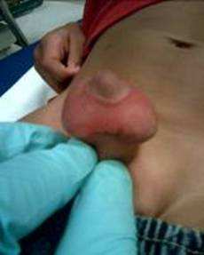

Introduction
Pediatric genital dermatoses are unique and require special consideration. Pediatric genital skin is different than adult skin. In children, the absence of sex hormones leaves the genital skin thin and without the protection of glands, oils, and hair normally seen in adults. Infants and children may also be incontinent, making the chemical irritation and chronic moisture from feces and urine exacerbating and causative to a variety of conditions.
Congenital skin conditions often present in childhood. Additionally, benign neoplasms suggestive of genetic disease may affect the genitalia. On the contrary, malignant and infectious dermatologic genitourinary conditions are relatively rare in children when compared to adults. This is related to the fact that in general children lack exposure to sexually transmitted infections and chronic inflammation.
Children have robust immune systems. Atopy is at its peak in childhood and tends to decline in adulthood. Thus, atopic dermatitis and other allergy-mediated disorders of the genital skin tend to be more common and more morbid in children.
Treatment of genital dermatoses in children is challenging because of concern for systemic side effects of steroids, immunomodulators, and antifungals. Expectant management of certain conditions may be appropriate as many dermatologic lesions are benign and self-limited; however, surgical management has the advantage of obtaining tissue diagnosis, improving function or cosmesis of the genitalia, or less commonly, curing the lesion.
Finally, pediatric genitourinary dermatologic conditions may raise the question of sexual abuse, whether legitimate or not. Caregivers may be avoidant and may not endorse a history of genital skin lesions in children. The genital exam in children is often a sensitive issue already. This is obviously exacerbated in the setting of abuse.
Allergic Dermatitis
Allergic dermatitis is characterized by pruritic, erythematous lesions associated with an exposure. The exposure then leads to an allergy-mediated response. These events are quite common and are often associated with the genitourinary system.
Atopic Dermatitis
Atopic dermatitis, or eczema, is a chronic skin condition characterized by dry, pruritic skin and lichenified eczematous plaques. Up to 20% of the pediatric population is affected by atopic dermatitis (AD) and at least 85% of affected individuals show symptoms prior to the age of 5. (Akdis 2006) Genetics play a large role in AD, with more than 20 genes involved and the propensity for AD to run in families. Atopic dermatitis is also associated with particular substances and conditions that can worsen symptoms. These include heat, wool, perspiration, emotional stress, aeroallergens (dust mites, pollen) and food allergens (Beltrani 1999). Any of these inciting factors can lead to generalized genital involvement.
Contact Dermatitis
Once thought to be uncommon in the pediatric population, contact dermatitis is increasingly being recognized in children. Contact dermatitis is most often divided into two subsets: irritant contact dermatitis (ICD) and allergic contact dermatitis (ACD). The presentation of these two forms is often similar with affected areas limited to areas of contact. There are however, subtle differences, in that ACD typically presents with weeping eczematous plaques and ICD is more likely to present with acute burns. Treatment involves identifying the potential trigger, eliminating its exposure, and treating the acute inflammatory phase.
Allergic contact dermatitis involves a Type IV hypersensitivity reaction, where an individual develops a reaction to a skin allergen following an initial phase of sensitization. The most common sensitizers in children are nickel, fragrances, rubber, lanolin and antibiotics (Katsarou 1996; Sharma 2010). ACD is most often seen as a pruritic eruption, which can develop into blisters and weeping lesions. Examples of genital involvement include reactions to cinnamon oil in vaginal suppositories and vulvar dermatitis to clomitrazole (Lauriola 2010; Pullen 2010). ACD has also been associated with the nickel found in some bed-wetting alarms (Hanks 1992). Removal of the offending agents will stop the process of eruption and irritation.
Irritant contact dermatitis is caused by the direct, cytotoxic effects of the offending agent. The severity of reaction can be altered by duration of contact, environmental factors and concurrent dermatitis. The most common ICD found in the pediatric population is diaper dermatitis (DD). Several factors contribute to the development of DD including friction, urine, feces and maceration of the skin by water. Inadequate skin care and Candida albicans have also been shown to increase rates of DD (Berg 1986; Zimmerer 1986). The areas most susceptible to DD are the perianal, buttocks and intertriginous zones. The genital area is much more likely to be affected in females (Visscher 2000). Shorter periods in contact with urine and feces, absorptive diapers and good hygiene are important in preventing DD. Other therapies include nystatin, hydrocortisone and protective pastes. All of these come with potential side effects and may cause primary genitourinary dermatoses on their own (Fiorillo 2004).
Erythema Multiforme (Stevens - Johnson Syndrome)
Erythema Multiforme (EM) is a generalized dermatologic condition, characterized by the acute and self-limited onset of lesions involving the skin and mucous membranes. EM is classified along a spectrum including EM minor, EM major, and Stevens - Johnson Syndrome (SJS) depending on severity. Traditionally, EM is described as target lesions and symmetric red papules. In its most severe form, the lesions resemble extensive skin burns with blistering and erythematous papules (Léauté-Labrèze 2000). Lesions of this severity require intensive care and are associated with significant morbidity and mortality. EM has a predilection to target mucous membranes including, but not limited to, the genitals and oral mucosa.
Causes of Erythema Multiforme
Drugs |
Infectious Agents |
Non-steroidal anti-inflammatories |
EBV |
Anti-convulsants |
HSV |
Antifungals |
CMV |
Antibiotics
|
Mycoplasma pneumonia |
Hepatitis |
|
Viruses |
|
Varicella-zoster virus |
|
Fungal infections |
|
|
Parasites |
|
Streptococci |
Figure 1
Figure 2
Figure 3

Figures 1-3. Young child with Stevens-Johnson Syndrome. Note focal involvement of oral mucosa with widespread erosions, with erosions also involving the penis.
In children, EM is most often associated with herpes simplex virus, Mycoplasma pneumoniae, sulfonamides and ß-lactams (Weston 1992; Osterne 2009). EM can be precipitated by both HSV-1 and HSV-2. These episodes usually follow HSV infection by 10-14 days and are sometimes signaled by prodromal symptoms. The prodrome is not as severe as that seen with SJS and can involve fever, headache, and cough. Treatment is supportive and acyclovir can be prescribed for recurrent episodes (Osterne 2009). Mycoplasma pneumonia is particularly associated with the development of SJS. It is usually preceded by a prodromal phase of fever, headache, upper respiratory symptoms and/or throat pain. When the genitals are involved, the most common presentation includes erosions, erythema and possible bleeding of the glans and labia (Vanfletern 2003). Such lesions can lead to complications as seen in a 14-year-old girl who developed hematocolpos following M. pneumonia-associated SJS with bullous lesions on both the external and internal genitalia (Murphy 1997). Treatment is usually limited to supportive measures. If M. pneumonia is found to be the etiology, the use of antibiotics is warranted.
Insect Bites
While the trunk and extremities are most often the sites of insect bites, insect bites to the genitals are not uncommon in children. The list of insects that have attacked pediatric genitals is long, but includes mosquitoes, ticks, wasps, mites, ants, chiggers and bees. The majority of these encounters occur during the warmer months, when children are outside and exposed insects. While pruritis, erythema and local inflammation are the most common symptoms, some reactions may be systemic and bites of particularly venomous can lead to more concerning symptoms. The resultant hypersensitivity reactions vary in intensity from slight erythema to the eruption of papules and vesicles. In some cases, the location and particular form of reaction can be a guide to the offending creature. Erythema migrans typically indicates a tick bite, while genital eruptions accompanied by bites on clothing lines suggest chiggers. (Smith 1998) (Elston 2010) If genitals have been exposed to the open air and bites are associated with erythema, wheals, and angioedema, mosquitoes may be the culprit. (Kulthanan 2010)
Figure 4

Figure 4. Tick bite and associated swelling of the scrotum in a young boy.
Treatment of these bites is primarily symptomatic with the use of topical steroids and anti-histamines. Use of long-sleeved clothing and repellants are useful in preventing insect bites. It is also important to have patients return if rashes continue or progress or they begin to notice new onset symptoms (Kulthanan 2010). This may be a sign of bacterial infection. Fever, malaise, and arthralgias could signal transmission of a vector-born disease such as Lyme disease or Rocky Mountain spotted fever (Eleston 2010). Antibiotic treatment then becomes necessary.
Papulosquamous Disorders
Lichen Sclerosus (Balanitis xerotixa obliterans)
Lichen sclerosus is a chronic, inflammatory disease process that primarily affects the anogenital region of both males and females. The characteristic lesions seen in this disease process are areas of pallor with thinning, atrophic and fragile skin. The skin is usually wrinkled and telangiectasias, purpura, fissures and erosions can be present. Progression of disease can lead to scarring, phimosis in males and degeneration into squamous cell carcinoma. (Jasaitiene 2008) When this process is found in males and confined to the penis, it is known as balanitis xerotica obliterans. It is histologically identical to lichen sclerosus and is treated no differently. (Kiss 2005) Balanitis xerotica obliterans can also be associated with lichen planus and cicatricial pemphigoid. (Mallon 2000) Both lichen sclerosus and the subset of balantic xerotica obliterans are atrophic and sclerotic process with an unclear pathophysiology. Work involving an autoimmune theory, has shown an increased incidence of HLA DQ7 in pediatric patients. This association is even greater than that seen in adults. (Powell 2000)
Figure 5
Figure 5. Lichen Sclerosus. Note the “hour-glass” appearance to the vulva and anus, with atrophic white center and surrounding erythema and hyperpigmentation.
The disease process seen in children with lichen sclerosus is slightly different than that in adults. The mean age of first presentation is 5 years and the mean age of diagnosis 7 years. In girls, the most common symptoms are itching and soreness. Other symptoms include genital erosions, fissures, dysuria, purpura and constipation. A small percentage of girls have no symptoms. In boys, lichen sclerosus is associated with phimosis, both congenital and acquired. Scarring of the urethral meatus can also lead to stenosis and even urethral fibrosis (Powell 2001). Diagnosis is most often made on a clinical basis, but biopsy of lesions will show inflammatory infiltrate and dermoepidermal degeneration (Kiss 2005). Treatment of lichen sclerosus is of paramount importance due to the chance of transformation into a malignant process. The initial treatment for lichen sclerosus involves potent topical steroids including betamethasone and clobetasol (Garzon 1998). More recently, immunomodulators such as pimecromilus and tacrolimus have been used with good results. Surgery may be necessary for lesions that lead to phimosis, meatal stenosis or urethral stricture. Adjuvant topical tacrolimus has also been used after surgery and led to subsequent disease control (Ebert 2008; Steffens 2010). Lichen sclerosus is a relapsing and remitting disease process. Nevertheless, in some pediatric cases, lichen sclerosus has completely resolved. The frequency of resolution is disputed, but it is thought that pediatric lichen sclerosus has a better prognosis than the adult form. The role of puberty in this process is also still under debate (Smith 2009).
Psoriasis
Psoriasis is an immune-mediated skin disorder that creates classic inflammatory, hyperproliferative lesions. It is a fairly common disorder, with a prevalence of around 2% in the general population. Traditionally, these lesions are characterized as plaque-like lesions and are found on the scalp and extensor surfaces of the body. Psoriasis can present anywhere and genital involvement is not uncommon. Genital lesions often present as erythematous, well-demarcated, thin-plaqued lesions that lack the traditional scaling. If any scaling is involved, it is minimal and can be scraped off with ease. This will lead to pinpoint bleeding on the exposed surface. In one study, the mean age for presentation with genital involvement was 35 years of age, though it can present at any age (Meeuwis 2010).
Figure 6
Figure 6. Erythrodermic presentation to psoriasis, with near confluent erythema with scale.
When children present to a physician with erythema, scaling or pruritis in the anogenital region, psoriasis should be part of the differential diagnosis. Psoriasis is particularly associated with chronic vulvovaginitis in the pediatric population (Fischer 2010). Diagnosis is usually made after a complete history and physical is made looking for other skin lesions, progression over time and family history (Trager 2004). Clinical presentation and history are usually enough for diagnosis. If diagnosis is not certain, biopsy can be taken for definitive histological certainty. Another less invasive option is the use of videodermatoscopy. On examination of psoriatic balanitis with videodermatoscopy, a consistent pattern of dilated, tortuous capillaries is seen in all patients (Lacarrubba 2004). If psoriatic involvement is limited to the genitals, systemic treatment is unnecessary. Along with hygiene and avoidance of irritating factors, treatment tends to focus on topical steroids, such as betamethasone, or liquor picis carbonis (LPC) cream (Trager 2004). If this is not successful, recent trials of immunomodulators like pimecromilus have had success (Amichai 2004).
Reiter’s Syndrome
Reiter’s syndrome, also known as reactive arthritis, is a seronegative spondyloarthropathy characterized by arthritis, conjunctivitis and urethritis. Traditionally, this disease process is known to present after bouts of gastrointestinal and urogenital infections in young males. In general, Reiter’s syndrome is more common in adults than children and males than females. While the exact pathophysiology is not known, it is thought that the inciting infection may cause cross-reactivity with the organisms or cytokine release (Wu 2008).
In children, the most common findings are bilateral conjunctivitis, dysuria and asymmetric, pauciarticular arthritis. The severity of symptoms can vary and all need to be present. More generalized complaints are also seen with fever, malaise and weight loss being reported. The most common mucocutaneous manifestation of the genitalia is circinate balanitis or vulvitis. In boys, these lesions are described as ulcers with shallow, serpiginous borders in uncircumcised boys. In circumcised boys, hyperkeratotic plaques are described. In studies, these lesions were found in 50% of patients, and the rarity of balanitis and vulvitis should prompt the consideration of juvenile Reiter’s syndrome (Zivony 1997; Manimegalai 2004). Diagnosis is made based on the clinical constellations and history during presentation. Abnormal laboratory values can include leukocytosis, elevated ESR and elevated CRP. While these are nonspecific findings, it has been shown that the ESR and CRP levels seen in Reiter’s syndrome are not as elevated as those seen in juvenile idiopathic arthritis (Linag 2004). Treatment of Reiter’s syndrome consists of anti-inflammatory medication and, if severe enough, immunomodulators. Cutaneous manifestations have been successfully treated with topical steroids and salicylic acid (Zivony 2004).
Fixed Drug Eruptions
Fixed drug eruptions (FDE) are characterized by sharply demarcated, round lesions that range from 2 to 10 cm in diameter. They can be erythematous to violaceous and their occurrence is associated with the ingestion of a particular drug. The timing of development of the lesions can last from hours to days and the inflamed lesions will resolve within a week. After the plaques resolve, hyperpigmentation will remain and can last for months to years. These reactions can manifest anywhere on the body but tend to affect the trunk, mucous membranes and genitalia. The keys to clinical diagnosis are the characteristic lesions, recent drug exposure and recurrence in the same location with repeat exposure (Morelli 1999).
Fixed drug eruptions are a common dermatologic skin lesion in children. Genital involvement has been reported in anywhere from 20% to 50% of cases. Clinical presentation usually consists of the characteristic lesions developing on the vulva, glans and occasionally the shaft or scrotum of the penis. Children have also reported pruritis, painful micturition and urinary retention (Nussinovitch 2002). The list of drugs that can cause these reactions is long, but there are some frequent offenders. Analgesics such as aspirin and paracetamol have been associated with FDE, along with colchicine, phenobarbitol, lidocaine and methyphenidate. Antibiotics such as co-trimoxazole, tetracycline, metronidazole and erythromycin have also been reported as causes. Co-trimoxazole and tetracycline have been singled out in particular for genital involvement (Ozkaya-Bayazit 2003; Nussinovitch 2002). While symptoms may be bothersome and leave behind telltale hyperpigmentation, intervention is not necessary as this is a benign process. It is prudent; however, to record the reaction so further exposure does not occur.
Vesiculobullous Disorders
This category of dermatologic pathology is comprised of disorders that involve the targeting of skin and mucous membranes by autoantibodies. Autoantibodies attack the various structures (desmosomes, hemidesmosomes) that create structural integrity for the skin and mucous membranes. The incidence of these disorders is rare, but can lead to extensive bullae formation. When genital or perianal regions are involved, it is important to rule out child abuse (Lara-Corrales 2010).
Bullous Pemphigoid
Bullous pemphigoid (BP) is a chronic, autoimmune process characterized by the development of blistering and tense bullae on normal or inflamed skin. Its incidence in children is rare and the involvement of genitals even more so. Disease tends to cluster on the flexural aspects of the skin and oral mucosa. The development of cutaneous manifestations involves IgG autoantibodies targeting the skin basement membrane zone (BMZ) and subsequent blistering. Confirmation of diagnosis requires biopsy with direct immunofluorescence and the isolation of target antigens can be helpful in some cases (Fisler 2003).
Figure 7
Figure 7. Bullous pemphigoid in a child, with multiple tense bullae on a surrounding bed of erythema.
While genital involvement in children is rare, multiple cases have been reported in both boys and girls. When involving boys, disease characteristics include chronic inflammation and blistering of the glans and severe phimosis is a possibility (Mirza 2008). In young women, BP is characterized by discomfort, dysuria and subepidermal blistering of the vulva. Again, immunofluorescence has demonstrated linear deposition of IgG at the dermoepidermal junction and antigens to BP230 and BP180. The majority of these patients do well with no resulting scarring or disfigurement of the vulva (Farrell 1998). Patients who have more widespread, systemic involvement tend to have less satisfactory outcomes and may require more aggressive therapies.
Treatment of BP tends to be very successful, with multiple options available to the physician. Oral corticosteroids tend to be the first-line therapy with doses ranging from 1-2 mg/kg/day. The addition of dapsone and sulfapyridine has also shown benefit in some cases (Mirza 2008). Topical preparations such as clobetasol propionate cream, oxytetracycline and nystatin have also shown efficacy (Farrell 1998). When these measures are unsuccessful, one can try more potent corticosteroids and pulse therapy. If these measures are still not successful, the use of IVIG in conjunction with steroids has been shown to yield therapeutic result (Sugawara 2007).
Pemphigus Vulgaris
Pemphigus represents a group of rare dermal diseases characterized by the autoimmune blistering of the skin and mucous membranes. In pemphigus patients, autoantibodies directed against desmosomal proteins leads to intraepidermal cleavage and blistering in the deep dermis. Immunofluorescence of biopsy specimens suggests a predominantly IgG mediated process accompanied by C3 deposits (Martel 2001). The development of pemphigus in children is rare, with the majority of cases presenting between the fourth and sixth decades of life.
As in adult disease, childhood pemphigus results in recurrent blistering of the skin and mucosal surfaces and suprabasal separation of the skin. With disease progression, blistered surfaces eventually rupture, leaving denuded and raw skin. Nikolsky’s sign is oftentimes positive. Genital involvement is rare, but consists of blistering of vaginal mucosa (Wananukul 1999). Like most autoimmune processes, steroid therapy plays a central role in the care of these patients. Oral corticosteroids form the base of therapy with the addition of dapsone, mycophenolate mofetil, azothioprine and cyclophosphamide in refractory cases (Yazganoglu 2006). More recently, the use of rituximab, a mono-clonal antiCD20 antibody, has been suggested for use in cases refractory to traditional approaches. Rituximab is usually administered with IVIG, though more research is needed to elucidate the most efficacious clinical approach (Fuertes 2010).
Epidermolysis Bullosa
Epidermolysis bullosa (EB) is a rare, congenital dermatologic condition characterized by fragile skin and frequent blistering and breakdown of mucous membranes and the dermis. This condition is broken into three major categories: EB simplex, junctional EB, and dystrophic EB. The distinction between particular forms is determined by particular gene involvement and the particular component of the cutaneous basement membrane zone. Initial diagnosis is usually made from clinical manifestations and family history of blistering disorders. Confirmatory diagnosis can be made via biopsy and subsequent direct immunofluorescence microscopy or electron microscope (Sawamura 2010). Involvement of the genitourinary tract is a significant component to the disease process. In fact, any patient with junctional or dystrophic epidermolysis bullosa, hematuria or pyloric stenosis should be evaluated for genitourinary involvement.
Figure 8
Figure 8. Development of meatal stenosis in a boy with epidermolysis bullosa.
Genitourinary complications of epidermolysis bullosa are most frequently seen with the junctional and dystrophic forms. Dermatologic findings of the genitals can include meatal stenosis, ulceration of the glans and labia, scarring of the glans, fusion of the labia, and narrowing of the vaginal vestibule. Along with the more outward signs, the entire genitourinary tract can be affected by strictures and related complications (Fine 2004; Srinivasin 2007). Along with the pain and discomfort associated with blistering, children may also present with dysuria, straining, and recurrent infections. With few options for treating the disease process itself, the main goal of the urologist should be preservation of renal function. Due to the tendency for stricture development and bladder dysfunction, the primary mode of treatment is urinary diversion. The particular form of diversion, cutaneous or gastrointestinal, chosen is dependent on the involvement of the gastrointestinal tract and patient prognosis (Donatucci 1992).
Figure 9
Figure 9. Genital and inguinal involvement in a boy with Epdiermolysis bullosa. Complete obliteration of meatus and distal urethra requiring suprapubic tube placement – note reaction around tube.
Noninfectious Ulcers
Pyoderma Gangrenosum
Pyoderma gangrenosum (PG) is an immune-mediated process characterized by the development of ulcerative skin disease. These ulcers, which can range in size, depth and location, are usually preceded by pustules. Pyoderma gangrenosum has traditionally been associated with other systemic conditions. These include, but are not limited to, inflammatory bowel disease (IBD) and myeloproliferative disorders such as monoclonal gammopathy and myeloma. Histologically, this disease process is associated with an inflammatory infiltrate involving neutrophils, macrophages and T lymphocytes. These cells have been shown to produce a number of inflammatory cytokines, TNF-α in particular, which contribute to the pathology (Marzano 2010). Diagnosis is notoriously difficult though particular clinical manifestations may suggest PG. These include ulcer involvement on one or both legs, systemic disease, pathergy, pustules and ulcers with undermined edges (Hadi 2010).
Cases of PG in children only account for 4% of all cases, with involvement of the genitals being only a portion of this subset. While exceedingly rare, both vulvar and penile involvement has been reported. In one case, diagnosis of PG was made in a young girl with ulcerative, purulent lesions with undermined edges found on the labia majora. This case was associated with an elevated inflammatory response and neutrophilic infiltrate on biopsy (Garcovich 2009). Involvement of the penis has also been demonstrated with ulceration of the glans, frenulum and shaft. Progression of PG in these instances can also lead to complications such as urethral fistulas (Georgala 2008). Treatment of PG in these cases focused on immune modulation. First-line therapy is considered to be corticosteroids and cyclosporine. For more refractory cases, TNF-α antagonists such as infliximab and other immunosuppresives such as tacrolimus have been suggested (Marzano 2010).
Behçet's disease
Behçet's disease is a multisystem inflammatory disease of unknown cause. It has a storied history and traces it roots along the Old Silk Road that connected East to West. This rare disease is characterized by recurrent oral ulcerations accompanied by genital ulceration, eye lesions (anterior uveitis, posterior uveitis, and retinal vasculitis), skin lesions (erythema nodosum, acneiform nodules, and pseudofolliculitis) and skin pathergy. The incidence of Behçet's disease is thought to vary among populations with presentations varying as well. A study of a North American population reported an incidence of 0.38 per 100,000 persons (Calamia 2009).
Behçet's tends to develop in the third and fourth decades of life, though the disease is not absent in children. While some cases are reported as early as the first year of life, the median age for presentation is about 15 years. Genital lesions have been reported in up to 70% of pediatric patients with proclivity for the vulva, scrotum and penis. There are some reports of perianal involvement as well (Koné-Paut 2005; Carvalho 2007). Diagnosis of BD is based on clinical criteria and international standards, though a positive skin pathergy test can be confirmatory. Multiple pharmacologic therapies have been tried with Behçet's disease, though there have been few studies specifically looking at treatment of the genital manifestations in children. Topical preparations such as triamcinilone can be used for mild cases. If mucocutaneous disease is severe, systemic therapies such as colchicine, cyclophosphamide and azothioprine can be tried (Ozen 2010). In one particular case, thalidomide was successful in controlling genital ulceration (Carvalho 2007).
Infections and Infestations
Fournier’s Gangrene
Figure 10
Figure 10. Fournier’s gangrene of the scrotum in a young boy.
Fournier’s Gangrene (FG) is the acute development of necrotizing fasciitis of the scrotum, perineum or perianal area and is associated with particularly high morbidity and mortality. Common risk-factors include diabetes mellitus, old age, malignancy, and immunocompromised states. The initial source of infection tends to come from colorectal disease, urologic disease and trauma. As this is an infectious process, culture of necrotic tissue grows multiple organisms in the majority of cases (Yanar 2006). Speciation of these polymicrobial infections most often indicates colonization by Escherichia coli, Staphylococcus aureus and Klebsiella pneumoniae. The most common symptoms associated with the presentation of FG are fever, pain and swelling of the genital and perianal region, purulent discharge and erythematous changes to the skin (Chen 2010). One can also see skin crepitation and pain out of proportion to the history. FG is a surgical emergency due to the tendency of quick progression of infection to the abdominal wall and cavity. This can quickly lead to sepsis and mortality. For this reason, FG must be ruled out in any instance of soft tissue infection involving the genitals or perianal regions.
Fournier’s gangrene is a rare entity in the pediatric population, though cases have even been documented in neonates. In children, the presentation and management of FG is quite similar to that of adults, though the onset of infection has also been associated with circumcision, insect bites and improper hygiene (Ekingen 2008). FG has also been associated with varicella infection in a few reported cases (Jefferies 2010). Regardless of etiology, FG continues to be a surgical emergency and requires swift action.
Management of FG is based on a timely diagnosis, initiation of broad-spectrum antibiotics and surgical debridement. Proper wound care is also paramount in these patients with frequent dressing changes and attention to keeping the affected area clean. This may necessitate the need for urinary or fecal diversion (Ekingen 2008). After the patient has stabilized, attention can be turned towards reconstructive measures using skin grafts and various flaps. Improvements in quality of life are associated with early wound coverage and reconstructive surgery (Chen 2010). Despite aggressive treatment, mortality in patients with FG can be as high as 30-40%.
Molluscum Contagiosum
Molluscum contagiosum is a dermatologic process caused by a set of viruses from the Poxviridae family. These viruses, MCVs-1, 2 and 3, cause raised, umbilicated lesions of the epidermis. Lesions can be multiple and are typically flesh colored, umbilicated papules. Lesions caused by MCV are for the most part self-limited, but can last anywhere from 6 months to 5 years. Because the majority of infection is spread via sexual contact, it is considered a sexually-transmitted disease (Tyring 2003). In the pediatric population, two-thirds of cases are found in children under the age of eight and more than half of MC at multiple sites (Dohil 2005). When MC is suspected, diagnosis is usually one of a clinical nature, though biopsy can be performed in atypical cases. Physicians must also keep in mind that the development of MC in a pediatric patient may be a sign of possible sexual misconduct on the part of caregiver or other close contacts.
Figure 11
Figure 11. Mollucsum contagiosum, notice multiple umbilicated papules on the periorificial area of this young child.
With the presentation of flesh-colored papules in the genital, suprapubic or perianal regions in a child, MC must be part of the differential. Once diagnosed, there are several treatment options. Because these lesions will resolve on their own, watchful waiting is an option. This may not be an appropriate option for some individuals due to personal preference and the risk of spread to close contacts. Topical treatments including tretinoin, imiquimod and cidofovir have all been used with clinical success in the pediatric population. More aggressive and clinician-performed treatments include curettage, cryotherapy and cantharone (not available in the US) (Trager 2005). With a wide range of options and positive outcome of infections, this is can be considered a fairly benign process.
Condyloma Accuminata (Genital Warts)
Condyloma accuminata are lesions caused by human papilloma viruses (HPV). It is an extremely common infection in adults and is becoming increasingly more common in the pediatric population. Modes of transmission can include vertical, innocent and sexual contact. The incubation period for the virus can range from 1 to 20 months (Allen 1998). In children, the most common presentation is that of anogenital warts, but can progress to large, cutaneous, fungating lesions. Vulvar lesions are particularly common. In select cases, lesions may became invasive and destroy underlying structures (Gor 2009). Diagnosis can be made on a clinical basis, but if more certainty is needed, diagnosis can be confirmed with immunohistochemical staining and HPV typification.
Figure 12
Figure 12. Genital warts associated with the dorsal aspect of the penis.
Spontaneous remission is possible in pediatric patients, though this not thought to be the norm. Unfortunately, the multiple drug therapies available have poor cure rates and condyloma has a high rate of relapse. In one study, children who did not experience spontaneous remission within two years were unlikely to see subsequent remission or response to treatment (Allen 1998). Available treatment options include cimetidine, podophyllin, cryotherapy, electrocautery, and cantharadin (Krogh 1994). Approaches that focus on epithelial destruction are associated with pain and discomfort. Creams such as podofilox and imiquimod are associated with good response, and less irritation, but long-term efficacy is still unknown (Moresi 2008). Another therapeutic option is photodynamic therapy using 20% 5-aminolaevulinic acid (ALA) gel and a He-Ne laser. Results in one case involving vulvar lesions in a 9-year-old girl were promising with complete resolution of lesions. While this treatment is expensive and limited to external warts, it is also notable for its lack of scarring and pain (Chen 2010).
Miscellaneous Cutaneous Disorders
Pearly Penile Papules
Pearly penile papules are benign lesions generally found near the corona of the penis and occasionally on the shaft. Characteristics of the lesions can be variable, though they tend to be 1-2 mm in width and 1-4 mm in length. The color of the lesions can be pink, yellow, white or translucent. The majority of these benign lesions are found incidentally or after being brought to the attention of the physician by a concerned patient. Pearly penile papules are asymptomatic in the majority of cases and are seen following puberty. Histologically, these lesions are related to acral angiofibromas (Agrawal 2004).
Figure 13
Figure 13. Pearly penile papules.
With the majority of cases being diagnosed several years after puberty, the incidence of pearly penile papules is thought to be extremely low. Nevertheless, there have been pediatric cases reported. Presentation is asymptomatic and similar to that of adults (Neri 1997). In pediatric cases, molluscum contagiosum and condyloma accuminata must be considered. Diagnosis can be made with biopsy and histologic characterization. Another option is the use of dermoscopy, which has the advantage of being non-invasive (Ozeki 2008). When treatment is desired, cryotherapy and carbon dioxide laser are the preferred methods (Agrawal 2004).
Capillary Hemangiomata
Capillary hemangiomata, both cutaneous and cavernous forms, are a very common congenital lesion found in the pediatric population. While they can be found in a number of locations, they are rarely associated with the genitalia or perianal area. The majority of cutaneous lesions are associated with the glans (Tsuji 1998). When these lesions are found, they tend to present in the first two years of life with swelling and occasional discomfort. In one case report, the swelling associated with a hemangioma of the glans led to paraphimosis (Yigiter 2007).
Hemangioma diagnosis includes biopsy, with the requisite staining and antigen isolation, and Doppler ultrasound studies. En bloc excision is the primary form of management for large lesions. When resecting cavernous hemangiomas, it is important for the surgeon to be aware that they may infiltrate deeper than expected (Ferrer 1994). When lesions are small, superficial or located in particularly delicate areas, laser therapy is an option (Yigiter 2007). Sclerotherapy is also an option for cutaneous lesions (Tsuji 1998).
Granuloma Anulare
Granuloma anulare is a benign condition characterized by granulomatous lesions. This is an inflammatory process where reactive inflammation and fibrosis surround areas of collagen degeneration. These lesions can come in four forms: annular, generalized, perforating and subcutaneous. The subcutaneous form is most often seen in the pediatric population (Forman 2008). While it is common for granuloma anulare to affect areas over bony prominences, it is rare for it to involve the genitals. Granuloma anulare of the genitals is asymptomatic except for the psychologic distress it may impart. Diagnosis is made via biopsy. Treatment can include complete excision, intralesion steroids, or conservative watch-and-wait management (Sidwell 2005).
Neurofibroma
Neurofibromas are benign tumors arising from the Schwann cells that comprise the nerve sheaths of peripheral and visceral nerves. These masses are associated with von Recklinghausen’s disease, also known as neurofibramatosis. The form in which these tumors present can vary greatly from small, superficial masses to large tumors that deeply infiltrate. These large, tortuous masses are known as plexiform neurofibromas, and carry the risk of malignant transformation. Development of these masses can be found all over the body, but genital involvement is rare (Littlejohn 2000; Mazdak 2007).
Genital involvement of neurofibromas can be found in both sexes. These soft tissue masses can involve the penis, scrotum, labia and clitoris. Mass effect of the tumors can lead to semi-hypertrophy of the penis, obstruction of the urethra and clitoromegaly. A fraction of neurofibromas extend into the pelvis and can abut the bladder and rectum (Pascual-Castroviejo 2008) .Workup of these masses requires enhanced MRI to determine the degree of involvement and planning for surgical approach. If complete resection is possible, this is the best mode of therapy. If nearby structures prevent full excision, removal of part of the tumor mass is warranted. Partial resection requires frequent follow-up with MRI due to the risk of future malignancy (Mazdak 2007).
Special thanks to Dr. Kenneth E Greer and Dr. Craig A Peters for contributing images.
References
Agrawal SK, Bhattacharya SN, Singh N. Pearly penile papules: A review. Int J Dermatol. 2004 Mar;43(3):199-201.
Akdis CA. Akdis M. Bieber T. Bindslev-Jensen C. Boguniewicz M. Eigenmann P et al. Diagnosis and treatment of atopic dermatitis in children and adults: European academy of allergology and clinical Immunology/American academy of allergy, asthma and Immunology/PRACTALL consensus report. Allergy. 2006 Aug;61(8):969-87.
Allen AL, Siegfried EC. The natural history of condyloma in children. J Am Acad Dermatol. 1998 Dec;39(6):951-5.
Amichai B. Psoriasis of the glans penis in a child successfully treated with elidel (pimecrolimus) cream. J Eur Acad Dermatol Venereol. 2004 Nov;18(6):742-3.
Beltrani VS. The clinical spectrum of atopic dermatitis. Journal of Allergy & Clinical Immunology. 1999 Sep;104(3 Pt 2):S87-98.
Berg RW, Buckingham KW, Stewart RL. Etiologic factors in diaper dermatitis: The role of urine. Pediatr Dermatol. 1986 Feb;3(2):102-6.
Bolognia, J.L., et al. (2003). Dermatology. St. Louis, MO: Elsevier
Calamia KT, Wilson FC, Icen M, Crowson CS, Gabriel SE, Kremers HM. Epidemiology and clinical characteristics of behcet's disease in the US: A population-based study. Arthritis Rheum. 2009 May 15;61(5):600-4.
Chen M, Xie J, Han J. Photodynamic therapy of condyloma acuminatum in a child. Pediatr Dermatol. 2010 Sep-Oct;27(5):542-4.
Chen SY, Fu JP, Wang CH, Lee TP, Chen SG. Fournier gangrene: A review of 41 patients and strategies for reconstruction. Ann Plast Surg. 2010 Jun;64(6):765-9.
de Carvalho VO, Abagge KT, Giraldi S, Kamoi TO, Assahide MK, Fillus Neto J, et al. Behcet disease in a child--emphasis on cutaneous manifestations. Pediatr Dermatol. 2007 Sep-Oct;24(5):E57-62.
Dohil MA, Lin P, Lee J, Lucky AW, Paller AS, Eichenfield LF. The epidemiology of molluscum contagiosum in children. J Am Acad Dermatol. 2006 Jan;54(1):47-54.
Donatucci CF, Berger TG, Deshon GE,Jr. Management of urinary tract in children with epidermolysis bullosa. Urology. 1992 Aug;40(2):137-42.
Ebert AK, Rosch WH, Vogt T. Safety and tolerability of adjuvant topical tacrolimus treatment in boys with lichen sclerosus: A prospective phase 2 study. Eur Urol. 2008 Oct;54(4):932-7.
Ekingen G, Isken T, Agir H, Oncel S, Gunlemez A. Fournier's gangrene in childhood: A report of 3 infant patients. J Pediatr Surg. 2008 Dec;43(12):e39-42.
Elston DM. Tick bites and skin rashes. Curr Opin Infect Dis. 2010 Apr;23(2):132-8.
Farrell AM, Kirtschig G, Dalziel KL, Allen J, Dootson G, Edwards S, et al. Childhood vulval pemphigoid: A clinical and immunopathological study of five patients. Br J Dermatol. 1999 Feb;140(2):308-12.
Ferrer FA, McKenna PH. Cavernous hemangioma of the scrotum: A rare benign genital tumor of childhood. J Urol. 1995 Apr;153(4):1262-4.
Fine JD, Johnson LB, Weiner M, Stein A, Cash S, DeLeoz J, et al. Genitourinary complications of inherited epidermolysis bullosa: Experience of the national epidermylosis bullosa registry and review of the literature. J Urol. 2004 Nov;172(5 Pt 1):2040-4.
Fiorillo L. Therapy of pediatric genital diseases. Dermatol Ther. 2004;17(1):117-28.
Fischer G. Chronic vulvitis in pre-pubertal girls. Australas J Dermatol. 2010 May;51(2):118-23.
Fisler RE, Saeb M, Liang MG, Howard RM, McKee PH. Childhood bullous pemphigoid: A clinicopathologic study and review of the literature. Am J Dermatopathol. 2003 Jun;25(3):183-9.
Forman SB, Sumfest JM, Pride HB, Ferringer TC. Penile granuloma annulare of an adolescent male--case report and review of the literature. Pediatr Dermatol. 2008 Mar-Apr;25(2):260-2.
Fuertes I, Guilabert A, Mascaro JM,Jr, Iranzo P. Rituximab in childhood pemphigus vulgaris: A long-term follow-up case and review of the literature. Dermatology. 2010 Aug;221(1):13-6.
Garcovich S, Gatto A, Ferrara P, Garcovich A. Vulvar pyoderma gangrenosum in a child. Pediatr Dermatol. 2009 Sep-Oct;26(5):629-31.
Garzon MC, Paller AS. Ultrapotent topical corticosteroid treatment of childhood genital lichen sclerosus. Arch Dermatol. 1999 May;135(5):525-8.
Georgala S, Georgala C, Nicolaidou E. Pyoderma gangrenosum of the penis: A potentially dramatic skin disease. Urology. 2008 Nov;72(5):1185.e9,1185.10.
Gor RA, Schober JM. Giant condyloma with demise secondary to meningococcemia in an infant boy. J Pediatr Urol. 2009 Aug;5(4):327-9.
Hadi A, Lebwohl M. Clinical features of pyoderma gangrenosum and current diagnostic trends. J Am Acad Dermatol. 2011 May;64(5):950-4.
Hanks JW, Venters WJ. Nickel allergy from a bed-wetting alarm confused with herpes genitalis and child abuse. Pediatrics. 1992 Sep;90(3):458-60.
James, William; Berger, Timothy; Elston, Dirk (2005). Andrews' Diseases of the Skin: Clinical Dermatology. (10th ed.). Saunders.
Jasaitiene D, Valiukeviciene S, Vaitkiene D, Jievaltas M, Barauskas V, Gudinaviciene I, et al. Lichen sclerosus et atrophicus in pediatric and adult male patients with congenital and acquired phimosis. Medicina (Kaunas). 2008;44(6):460-6.
Jefferies M, Saw NK, Jones P. Fournier's gangrene in a five year old boy - beware of the child post varicella infection. Ann R Coll Surg Engl. 2010 Jul;92(5):W62-3.
Katsarou A, Koufou V, Armenaka M, Kalogeromitros D, Papanayotou G, Vareltzidis A. Patch tests in children: A review of 14 years experience. Contact Dermatitis. 1996 Jan;34(1):70-1.
Kiss A, Kiraly L, Kutasy B, Merksz M. High incidence of balanitis xerotica obliterans in boys with phimosis: Prospective 10-year study. Pediatr Dermatol. 2005 Jul-Aug;22(4):305-8.
Kone-Paut I, Yurdakul S, Bahabri SA, Shafae N, Ozen S, Ozdogan H, et al. Clinical features of behcet's disease in children: An international collaborative study of 86 cases. J Pediatr. 1998 Apr;132(4):721-5.
Kone-Paut I, Yurdakul S, Bahabri SA, Shafae N, Ozen S, Ozdogan H, et al. Clinical features of behcet's disease in children: An international collaborative study of 86 cases. J Pediatr. 1998 Apr;132(4):721-5.
Kulthanan K, Wongkamchai S, Triwongwaranat D. Mosquito allergy: Clinical features and natural course. J Dermatol. 2010 Dec;37(12):1025-31.
Lacarrubba F, Nasca MR, Micali G. Videodermatoscopy enhances diagnostic capability in psoriatic balanitis. J Am Acad Dermatol. 2009 Dec;61(6):1084-6.
Lara-Corrales I, Pope E. Autoimmune blistering diseases in children. Semin Cutan Med Surg. 2010 Jun;29(2):85-91.
Lauriola MM, De Bitonto A, Sena P. Allergic contact dermatitis due to cinnamon oil in galenic vaginal suppositories. Acta Derm Venereol. 2010 Mar;90(2):187-8.
Leaute-Labreze C, Lamireau T, Chawki D, Maleville J, Taieb A. Diagnosis, classification, and management of erythema multiforme and stevens-johnson syndrome. Arch Dis Child. 2000 Oct;83(4):347-52.
Liang TC, Hsu CT, Yang YH, Lin YT, Chiang BL. Analysis of childhood reactive arthritis and comparison with juvenile idiopathic arthritis. Clin Rheumatol. 2005 Aug;24(4):388-93.
Littlejohn JO, Belman AB, Selby D. Plexiform neurofibroma of the penis in a child. Urology. 2000 Oct 1;56(4):669.
Mallon E, Hawkins D, Dinneen M, Francics N, Fearfield L, Newson R, et al. Circumcision and genital dermatoses. Arch Dermatol. 2000 Mar;136(3):350-4.
Manimegalai N, Rajamurugan PS, Rajendran CP, Rukmangatharajan S, Rajeshwari S, Ravichandran R, et al. Childhood reactive arthritis. J Clin Rheumatol. 2008 Oct;14(5):292-3.
Martel P, Joly P. Pemphigus: Autoimmune diseases of keratinocyte's adhesion molecules. Clin Dermatol. 2001 Nov-Dec;19(6):662-74.
Marzano AV, Cugno M, Trevisan V, Fanoni D, Venegoni L, Berti E, et al. Role of inflammatory cells, cytokines and matrix metalloproteinases in neutrophil-mediated skin diseases. Clin Exp Immunol. 2010 Oct;162(1):100-7.
Mazdak H, Gharaati MR. Plexiform neurofibroma of penis. Urol J. 2007 Winter;4(1):52-4.
Meeuwis KA, de Hullu JA, de Jager ME, Massuger LF, van de Kerkhof PC, van Rossum MM. Genital psoriasis: A questionnaire-based survey on a concealed skin disease in the netherlands. J Eur Acad Dermatol Venereol. 2010 Dec;24(12):1425-30.
Mirza M, Zamilpa I, Wilson JM. Localized penile bullous pemphigoid of childhood. J Pediatr Urol. 2008 Oct;4(5):395-7.
Morelli JG, Tay YK, Rogers M, Halbert A, Krafchik B, Weston WL. Fixed drug eruptions in children. J Pediatr. 1999 Mar;134(3):365-7.
Moresi JM, Herbert CR, Cohen BA. Treatment of anogenital warts in children with topical 0.05% podofilox gel and 5% imiquimod cream. Pediatr Dermatol. 2001 Sep-Oct;18(5):448,50; discussion 452.
Murphy MI, Brant WE. Hematocolpos caused by genital bullous lesions in a patient with stevens-johnson syndrome. J Clin Ultrasound. 1998 Jan;26(1):52-4.
Neri I, Bardazzi F, Raone B, Negosanti M, Patrizi A. Ectopic pearly penile papules: A paediatric case. Genitourin Med. 1997 Apr;73(2):136.
Nussinovitch M, Prais D, Ben-Amitai D, Amir J, Volovitz B. Fixed drug eruption in the genital area in 15 boys. Pediatr Dermatol. 2002 May-Jun;19(3):216-9.
Osterne RL, Matos Brito RG, Pacheco IA, Alves AP, Sousa FB. Management of erythema multiforme associated with recurrent herpes infection: A case report. J Can Dent Assoc. 2009 Oct;75(8):597-601.
Ozeki M, Saito R, Tanaka M. Dermoscopic features of pearly penile papules. Dermatology. 2008;217(1):21-2.
Ozen S. Pediatric onset behcet disease. Curr Opin Rheumatol. 2010 Sep;22(5):585-9.
Ozkaya-Bayazit E. Specific site involvement in fixed drug eruption. J Am Acad Dermatol. 2003 Dec;49(6):1003-7.
Pascual-Castroviejo I, Lopez-Pereira P, Savasta S, Lopez-Gutierrez JC, Lago CM, Cisternino M. Neurofibromatosis type 1 with external genitalia involvement presentation of 4 patients. J Pediatr Surg. 2008 Nov;43(11):1998-2003.
Powell J, Wojnarowska F. Childhood vulval lichen sclerosus and sexual abuse are not mutually exclusive diagnoses. BMJ. 2000 Jan 29;320(7230):311.
Powell J, Wojnarowska F. Childhood vulvar lichen sclerosus: An increasingly common problem. J Am Acad Dermatol. 2001 May;44(5):803-6.
Pullen SK, Warshaw EM. Vulvar allergic contact dermatitis from clotrimazole. Dermatitis. 2010 Feb;21(1):59-60.
Rapini, Ronald P.; Bolognia, Jean L.; Jorizzo, Joseph L. (2007). Dermatology: 2-Volume Set. St. Louis: Mosby.
Sawamura D, Nakano H, Matsuzaki Y. Overview of epidermolysis bullosa. J Dermatol. 2010 Mar;37(3):214-9.
Sharma VK, Asati DP. Pediatric contact dermatitis. Indian J Dermatol Venereol Leprol. 2010 Sep-Oct;76(5):514-20.
Sidwell RU, Green JS, Agnew K, Francis ND, Roberts NM, Yates VM, et al. Subcutaneous granuloma annulare of the penis in 2 adolescents. J Pediatr Surg. 2005 Aug;40(8):1329-31.
Smith GA, Sharma V, Knapp JF, Shields BJ. The summer penile syndrome: Seasonal acute hypersensitivity reaction caused by chigger bites on the penis. Pediatr Emerg Care. 1998 Apr;14(2):116-8.
Smith SD, Fischer G. Childhood onset vulvar lichen sclerosus does not resolve at puberty: A prospective case series. Pediatr Dermatol. 2009 Nov-Dec;26(6):725-9.
Srinivasin A, Palmer LS. Genitourinary complications of epidermolysis bullosa. Urology. 2007 Jul;70(1):179.e5,179.e6.
Steffens JA, Anheuser P, Treiyer AE, Reisch B, Malone PR. Plastic meatotomy for pure meatal stenosis in patients with lichen sclerosus. BJU Int. 2010 Feb;105(4):568-72.
Sugawara N, Nagai Y, Matsushima Y, Aoyama K, Ishikawa O. Infantile bullous pemphigoid treated with intravenous immunoglobulin therapy. J Am Acad Dermatol. 2007 Dec;57(6):1084-9.
Trager JD. What's your diagnosis? inflamed vulvar papules in a 7-year-old girl. J Pediatr Adolesc Gynecol. 2005 Jun;18(3):179-82.
Trager JD. What's your diagnosis? well-demarcated vulvar erythema in two girls. J Pediatr Adolesc Gynecol. 2005 Feb;18(1):43-6
Tsujii T, Iwai T, Inoue Y, Kubota T, Kihara K, Oshima H. Cutaneous hemangioma of the penis successfully treated with sclerotherapy and ligation. Int J Urol. 1998 Jul;5(4):396-7.
Tyring SK. Molluscum contagiosum: The importance of early diagnosis and treatment. Am J Obstet Gynecol. 2003 Sep;189(3 Suppl):S12-6.
Vanfleteren I, Van Gysel D, De Brandt C. Stevens-johnson syndrome: A diagnostic challenge in the absence of skin lesions. Pediatr Dermatol. 2003 Jan-Feb;20(1):52-6.
Visscher MO, Chatterjee R, Munson KA, Bare DE, Hoath SB. Development of diaper rash in the newborn. Pediatr Dermatol. 2000 Jan-Feb;17(1):52-7.
von Krogh G, Szpak E, Andersson M, Bergelin I. Self-treatment using 0.25%-0.50% podophyllotoxin-ethanol solutions against penile condylomata acuminata: A placebo-controlled comparative study. Genitourin Med. 1994 Apr;70(2):105-9.
Wananukul S, Pongprasit P. Childhood pemphigus. Int J Dermatol. 1999 Jan;38(1):29-35.
Weston JA, Weston WL. The overdiagnosis of erythema multiforme. Pediatrics. 1992 Apr;89(4 Pt 2):802.
Wu IB, Schwartz RA. Reiter's syndrome: The classic triad and more. J Am Acad Dermatol. 2008 Jul;59(1):113-21.
Yanar H, Taviloglu K, Ertekin C, Guloglu R, Zorba U, Cabioglu N, et al. Fournier's gangrene: Risk factors and strategies for management. World J Surg. 2006 Sep;30(9):1750-4.
Yazganoglu KD, Baykal C, Kucukoglu R. Childhood pemphigus vulgaris: Five cases in 16 years. J Dermatol. 2006 Dec;33(12):846-9.
Yigiter M, Arda IS, Hicsonmez A. An unusual cause of paraphimosis: Hemangioma of the glans penis. J Pediatr Surg. 2008 Feb;43(2):e31-3.
Zimmerer RE, Lawson KD, Calvert CJ. The effects of wearing diapers on skin. Pediatr Dermatol. 1986 Feb;3(2):95-101.
Zivony D, Nocton J, Wortmann D, Esterly N. Juvenile reiter's syndrome: A report of four cases. J Am Acad Dermatol. 1998 Jan;38(1):32-7.
 |
 |
 |
 |
 |
 |
 |
 |